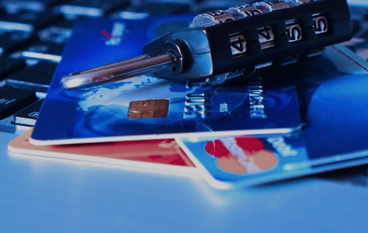

VISA или MasterCard: выбираем платежную систему для бизнеса
Eсли вы пользуетесь банковской картой внутри страны, то в принципе вам все равно, к какой платежной системе она подключена. Это может быть VISA, может быть MasterCard, а может быть какая-либо локальная система. Разницы вы непочувствуете, когда снимаете деньги в банкомате своего города или рассчитываетесь в местном супермаркете.
Но стоит вам выехать за границу страны, платежная система, к которой подключена ваша карта, начинает становить сязначимым фактором. На чем же остановить свой выбор? Поговорим об этом подробно.
Сравнение рыночных показателей
Битва за право быть мировой главной платежной системой идет между VISA и MasterCard с момента появления электронныхденег. Приведем несколько фактов:
- Сегодня VISA представлена в 200 странах, а MasterCard принимают к оплате в 210 государствах мира.
- 29 % всех карт в мире принадлежат VISA, а 16 % — MasterCard. Остальные обслуживаются местными платежными системами.
- 80 российских банков являются партнерами VISA и 100 финансовых учреждений — MasterCard.
- 20 млн торговых точек по всему миру подключены к VISA, 30 млн — к MasterCard.
У VISA во всем мире больше банкоматов, а значит, существует больше возможностей снять деньги или провести любую другую операцию. И это значительное преимущество.
Обе платежные системы дают возможность оплатить покупку в интернете, причем сделать это безопасно, не опасаясь действий мошенников. В этом смысле для среднестатистического путешественника или россиянина, выезжающего за границу на учебу или лечение, особой разницы нет. Значит, выбор надо делать на основании других критериев. Вот о них и поговорим.
Главное отличие
Оно заключается в основной валюте платежной системы. У VISA это доллар США, у MasterCard — доллар и евро. Это не значит,что вы не сможете расплатиться VISA в Германии или Франции, — это означает, что в этом случае у вас будет дветранзакции, и каждая будет списывать свою, пусть небольшую банковскую комиссию (до 1 % от суммы операции). Да и курсы тут будут отнюдь не рыночные, а внутренние, назначаемые банком, изготовившим карту.
Смотрите, что получается. Допустим, у вас есть банковская карта MasterCard и ее основная валюта — рубль. Вам надорасплатиться в местном супермаркете. Вы предоставляете эту карту, основная валюта платежной системы MasterCard совпадаетс валютой расчетов, имеет место одна транзакция (RUB-EUR) и одна комиссия. Если у вас банковская карта VISA, то для оплаты покупки в немецком магазине нужны будут две транзакции: RUB-USD и USD-EUR. А где две транзакции, там две комиссии. Значит, тут лучше подойдет карта, принадлежащая MasterCard.
Дополнительные преимущества
VISA в России имеет порядка полсотни компаний-партнеров. С этой картой можно получить большую скидку (5—10 % в зависимости от приобретаемого товара) или увеличенный кешбэк. Владельцы карт премиум-класса могут пользоваться VIP-залами в аэропортах, а скидки на такси ведущих сетей (например, UBER) могут достигать 50 %.
MasterCard пошел другим путем: расплачиваясь картой, ее держатель получает бонусные баллы, которые может потом обменять на призы из каталога, выпускаемого MasterCard в России (всего порядка 200 предложений). А вот скидочных программ у владельцев карт этой платежной системы не так много.